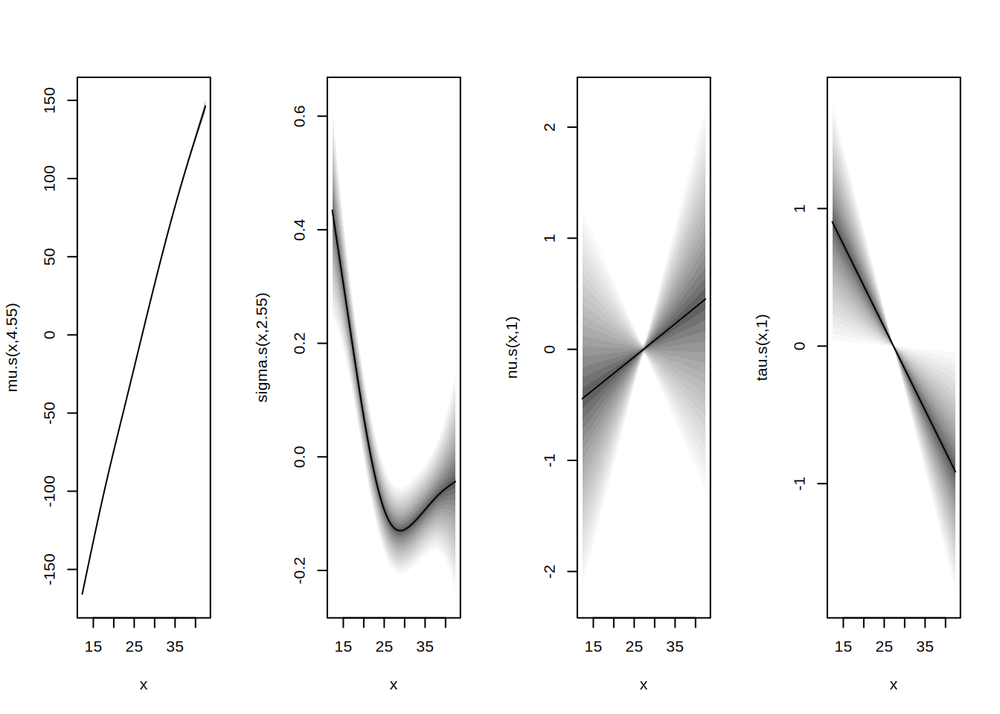

library("gamlss2")
## load the abdominal circumference data
data("abdom", package = "gamlss.data")
## specify the model Formula
f <- y ~ s(x) | s(x) | s(x) | s(x)
## estimate model
b <- gamlss2(f, data = abdom, family = BCT)GAMLSS-RS iteration 1: Global Deviance = 4774.4529 eps = 0.534347
GAMLSS-RS iteration 2: Global Deviance = 4770.23 eps = 0.000884
GAMLSS-RS iteration 3: Global Deviance = 4770.1675 eps = 0.000013
GAMLSS-RS iteration 4: Global Deviance = 4770.1566 eps = 0.000002 ## model summary
summary(b)Call:
gamlss2(formula = f, data = abdom, family = BCT)
---
Family: BCT
Link function: mu = identity, sigma = log, nu = identity, tau = log
*--------
Parameter: mu
---
Coefficients:
Estimate Std. Error t value Pr(>|t|)
(Intercept) 226.334 1.257 180 <2e-16 ***
---
Smooth terms:
s(x)
edf 4.551
*--------
Parameter: sigma
---
Coefficients:
Estimate Std. Error t value Pr(>|t|)
(Intercept) -2.92263 0.01101 -265.5 <2e-16 ***
---
Smooth terms:
s(x)
edf 2.564
*--------
Parameter: nu
---
Coefficients:
Estimate Std. Error t value Pr(>|t|)
(Intercept) -0.18024 0.04599 -3.919 9.93e-05 ***
---
Smooth terms:
s(x)
edf 1.0015
*--------
Parameter: tau
---
Coefficients:
Estimate Std. Error t value Pr(>|t|)
(Intercept) 2.6547 0.0144 184.4 <2e-16 ***
---
Signif. codes: 0 '***' 0.001 '**' 0.01 '*' 0.05 '.' 0.1 ' ' 1
---
Smooth terms:
s(x)
edf 1.0004
*--------
n = 610 df = 13.12 res.df = 596.88
Deviance = 4770.1566 Null Dev. Red. = 33.39%
AIC = 4796.3906 elapsed = 0.89sec## plot estimated effects
plot(b, which = "effects")
## plot diagnostics
plot(b, which = "resid")
## predict parameters
par <- predict(b)
## predict quantiles
pq <- sapply(c(0.05, 0.5, 0.95), function(q) family(b)$q(q, par))
## visualize
plot(y ~ x, data = abdom, pch = 19,
col = rgb(0.1, 0.1, 0.1, alpha = 0.3))
matplot(abdom$x, pq, type = "l", lwd = 2,
lty = 1, col = 4, add = TRUE)## use of starting values
m <- gamlss2(f, data = abdom, family = BCT,
start = c(mu = 200, sigma = 0.1, nu = 0, tau = 10))GAMLSS-RS iteration 1: Global Deviance = 4789.3844 eps = 0.556049
GAMLSS-RS iteration 2: Global Deviance = 4775.2264 eps = 0.002956
GAMLSS-RS iteration 3: Global Deviance = 4772.53 eps = 0.000564
GAMLSS-RS iteration 4: Global Deviance = 4770.7437 eps = 0.000374
GAMLSS-RS iteration 5: Global Deviance = 4769.9311 eps = 0.000170
GAMLSS-RS iteration 6: Global Deviance = 4769.9052 eps = 0.000005 ## fix some parameters
m <- gamlss2(f, data = abdom, family = BCT,
start = c(mu = 200, sigma = 0.1, nu = 0, tau = 10),
fixed = c(nu = TRUE, tau = TRUE))GAMLSS-RS iteration 1: Global Deviance = 4799.4176 eps = 0.555119
GAMLSS-RS iteration 2: Global Deviance = 4795.2801 eps = 0.000862
GAMLSS-RS iteration 3: Global Deviance = 4795.2666 eps = 0.000002 ## estimated coefficients (intercepts)
coef(m) mu.p.(Intercept) sigma.p.(Intercept) nu.p.(Intercept) tau.p.(Intercept)
226.349307 -2.922923 0.000000 2.302585 ## starting values using full predictors
m <- gamlss2(f, data = abdom, family = BCT,
start = fitted(m))GAMLSS-RS iteration 1: Global Deviance = 4902.0842 eps = 0.372275
GAMLSS-RS iteration 2: Global Deviance = 4775.4005 eps = 0.025842
GAMLSS-RS iteration 3: Global Deviance = 4774.5559 eps = 0.000176
GAMLSS-RS iteration 4: Global Deviance = 4774.5318 eps = 0.000005 ## same with
m <- gamlss2(f, data = abdom, family = BCT,
start = m)GAMLSS-RS iteration 1: Global Deviance = 4774.4529 eps = 0.534347
GAMLSS-RS iteration 2: Global Deviance = 4770.23 eps = 0.000884
GAMLSS-RS iteration 3: Global Deviance = 4770.1675 eps = 0.000013
GAMLSS-RS iteration 4: Global Deviance = 4770.1566 eps = 0.000002